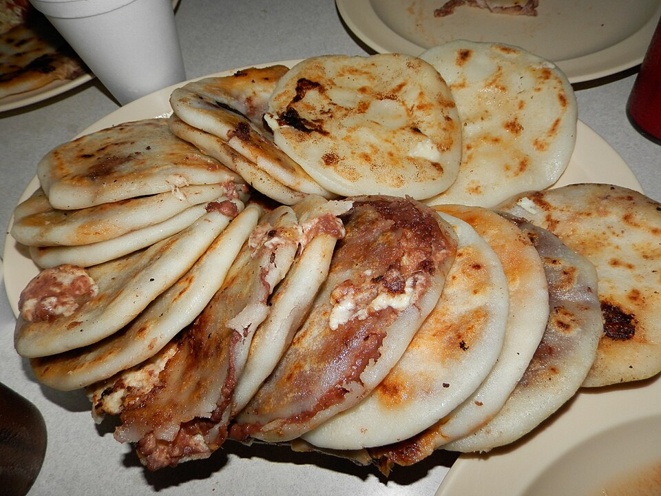
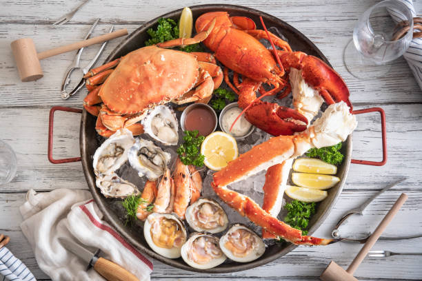
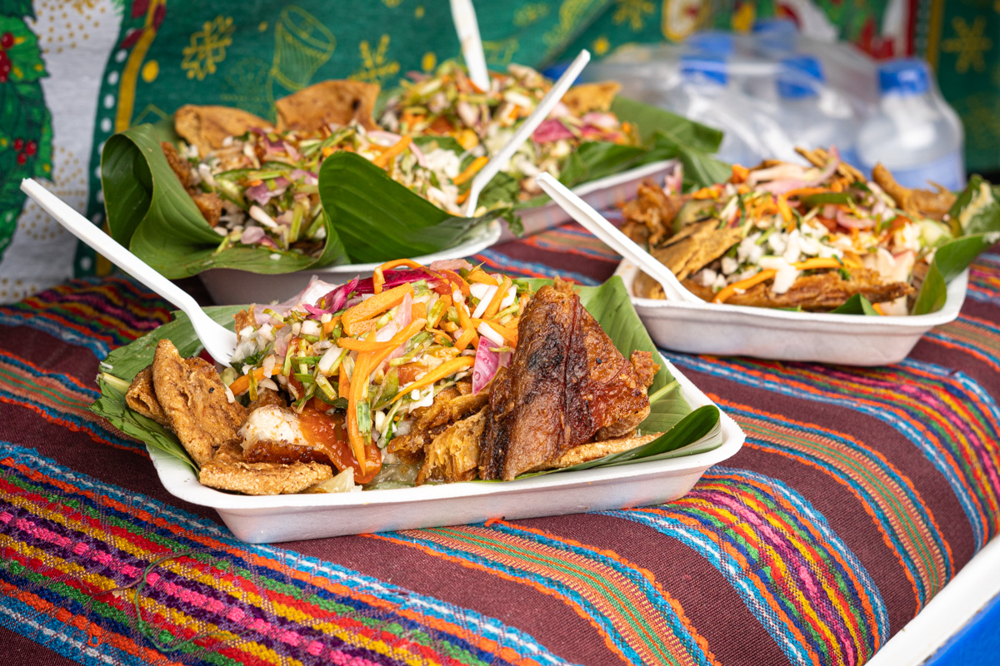

Disfruta la tradición gastronómica salvadoreña con recetas típicas, ingredientes frescos y el verdadero sabor cuscatleco.
Reserva tu experienciaSomos un emprendimiento dedicado a promover la gastronomía salvadoreña, ofreciendo una experiencia culinaria basada en recetas tradicionales, atención personalizada y productos elaborados con ingredientes locales.
Nuestro objetivo es compartir la cultura y tradición de El Salvador a través de platillos emblemáticos como pupusas, yuca frita y mariscadas.

Elaboradas artesanalmente con queso, frijoles y chicharrón.

Deliciosa combinación de mariscos frescos y especias típicas.

Acompañada con curtido y salsa casera salvadoreña.